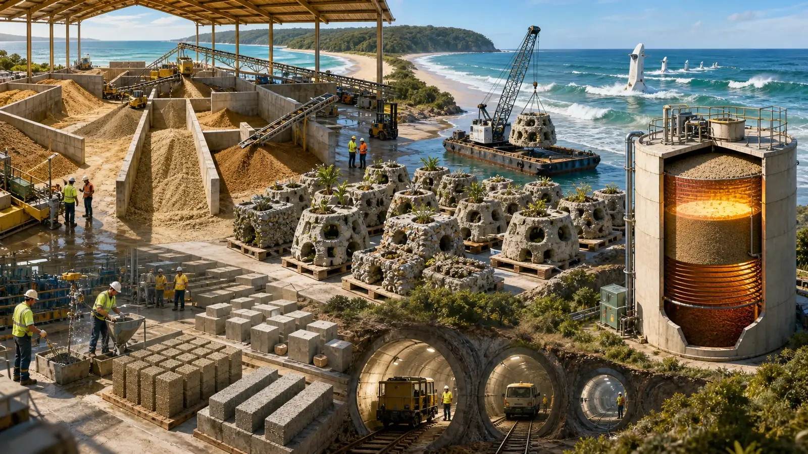

Construction products
Test graded fill, precast blocks, aggregate blends and geopolymer formulations for strength, durability and leaching.
 Sandworm Subterranean SystemsMoreton Bay research & development
Sandworm Subterranean SystemsMoreton Bay research & developmentChapter 07 / 17 · Spoil & energy
Turn material recovery into a measured co-product pathway for the Straddie Clean Energy Superpower concept.

Excavated material is not automatically clean, valuable or legally saleable. Characterise moisture, salts, silica, heavy minerals, contaminants, grain size and naturally occurring radioactive material where relevant. Establish ownership, authorised transport, environmental limits and disposal obligations.
Test graded fill, precast blocks, aggregate blends and geopolymer formulations for strength, durability and leaching.
Evaluate suitable silica-rich fractions for insulated sensible-heat storage. Test thermal cycles and quantify heat losses and balance-of-plant cost.
Reef or shoreline applications are independent ecological and marine approval questions, not a disposal shortcut.
Analyse composition and lawful beneficiation options. Do not imply revival of historical sandmining or extraction rights.
Illustrative inputs only. The balance must also account for water, rejects, storage, certification and lawful disposal. The model assigns no speculative mineral or carbon credit.
Straddie Clean Energy Superpower ↗ links material use with sand thermal storage, wave and tidal research, local energy and manufacturing. Maker-Space Lab ↗ and Tip Loop Lab ↗ provide related material literacy and circular making concepts.
Investigate certified recovered-material components for robotic aquaculture pods. Marine durability, leaching, ownership and ecological acceptance must be tested before a component is considered suitable.
Explore interlocking paving for roads, walking paths and cycleways as a potential recovered-sand manufacturing, stormwater, energy and autonomous maintenance research programme.
Explore shared ownership of Sandworm and island community sovereign wealth funds, linking Mutual Futures with long-term local reinvestment and community decision rights.